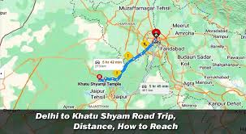

How to Reach Khatu Shyam Ji Temple
Mode
Details
Nearest Railway Station
Ringas Junction (17 km)
Nearest Airport
Jaipur International Airport (80 km)
By Road
Buses available from Jaipur, Sikar, and Delhi
